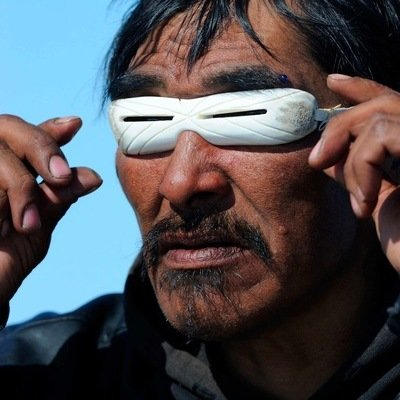
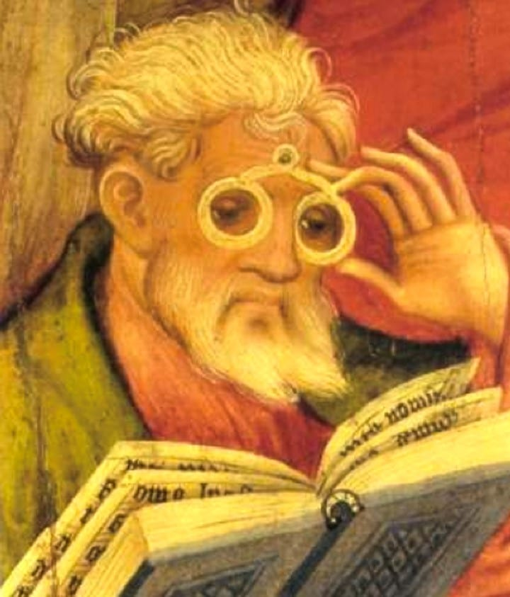
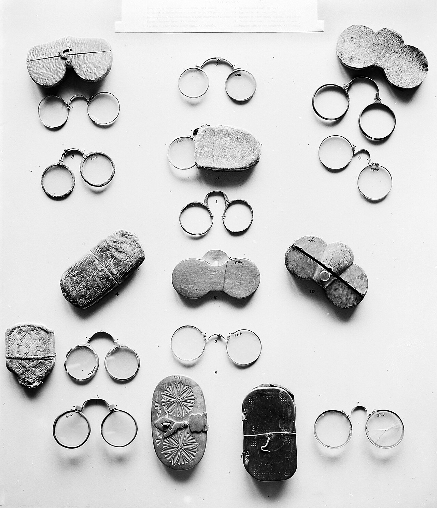
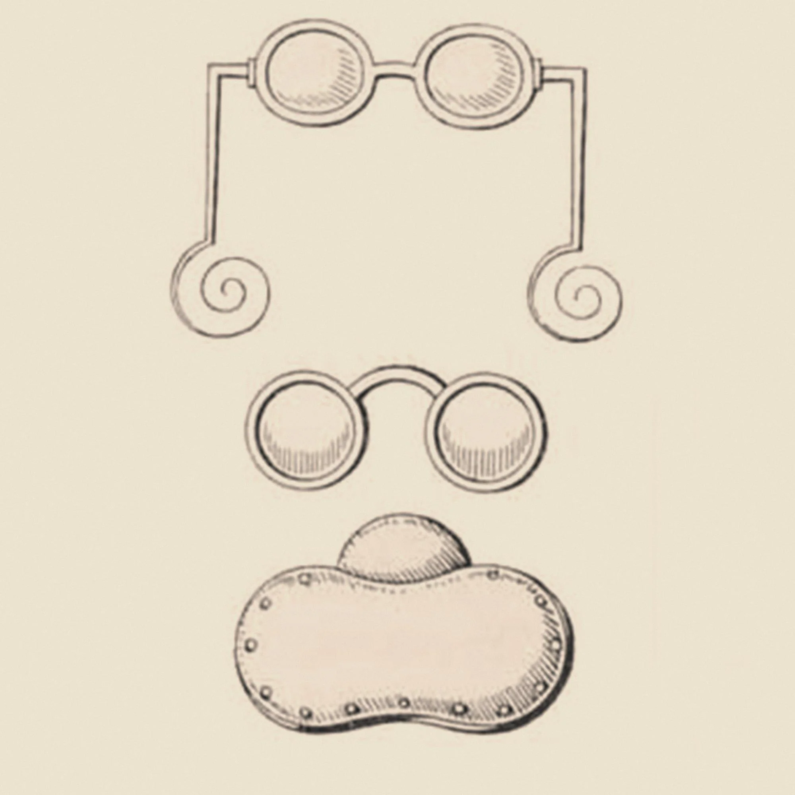
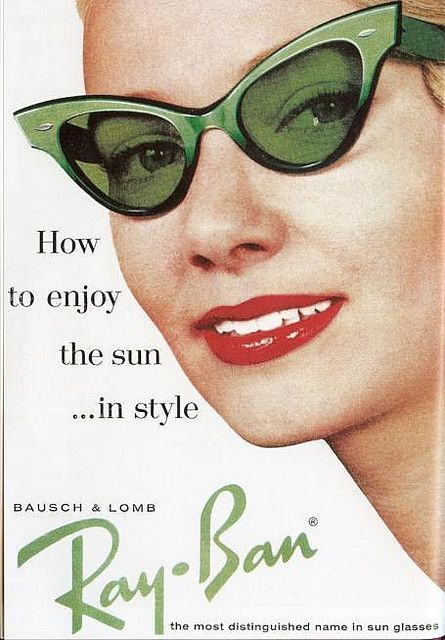
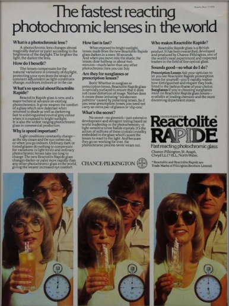

ปี 1000
ยุคก่อนแว่นตา: มองไม่ชัด = เสียเปรียบทุกอย่าง

"ในบรรดาประสาทสัมผัสทั้ง 5 การมองเห็นสำคัญที่สุด" — นี่ไม่ใช่แค่คำพูดของคนโบราณ งานวิจัยสมัยใหม่ยืนยันว่าสมองมนุษย์ใช้พลังงานถึง 65% ของ visual cortex ในการประมวลข้อมูลภาพ
ลองย้อนกลับไปสัก 3,000 ปีที่แล้วครับ ถ้าคุณเกิดมาพร้อมกับสายตาสั้น -3.00 ขึ้นไป ชีวิตคุณจะยากมาก คุณจะออกล่าสัตว์ไม่ได้เพราะมองไม่เห็นเหยื่อ ป้องกันตัวเองจากสัตว์ผู้ล่าไม่ได้ เดินป่าโดยไม่ตกเหวก็ยาก และถ้าเป็นยุคที่ต้องอ่านเขียน คุณก็ทำไม่ได้อีก — สายตาไม่ดี = ถูกกีดกันออกจากสังคม
แต่มนุษย์เราไม่เคยยอมแพ้ และนั่นทำให้เกิดการแก้ปัญหาแรกๆ ขึ้นมา
ชาวเอสกิโม (Inuit) เป็นคนกลุ่มแรกที่ประดิษฐ์ "อุปกรณ์ช่วยการมองเห็น" อย่างเป็นระบบ พวกเขาทำแว่นจากกระดูกวาฬหรืองาช้าง เจาะช่องแคบๆ ตรงกลางเพื่อให้แสงเข้าน้อยลง — ไม่ใช่เพื่อแก้สายตา แต่เพื่อป้องกัน Snow Blindness ที่เกิดจากแสง UV สะท้อนจากหิมะ นักล่าสัตว์ที่ไม่มีแว่นนี้อาจตาบอดชั่วคราวและตายได้กลางทุ่งหิมะ
อีกฝั่งโลก ที่กรุงโรม จักรพรรดิ นีโร (Emperor Nero, ค.ศ. 37–68) ถือเป็นคนรวยที่สุดในโลกยุคนั้น แต่แม้แต่เขาก็มีปัญหาสายตา เขาแก้ปัญหาโดยใช้ เพชรสีเขียว (Smaragdus) ที่ขัดจนใส ส่องดูการแข่งขันกลาดิเอเตอร์ — นี่เป็นครั้งแรกในประวัติศาสตร์ที่มีบันทึกการใช้วัตถุโปร่งใสช่วยในการมองเห็น
ก่อนหน้าแว่นตา นักบวชและนักวิชาการที่มองใกล้ไม่ชัดจะใช้วิธีง่ายๆ: เอา แก้วน้ำใส่จนเต็ม หรือก้อนแก้วกลมๆ วางบนหนังสือ น้ำในแก้วจะทำหน้าที่เหมือน เลนส์นูน (Convex Lens) ขยายตัวอักษรให้อ่านได้ — ถ้าใครเรียนฟิสิกส์ก็น่าจะเคยทดลองแบบนี้ตอนเรียน
ประมาณปี ค.ศ. 1000 นักวิชาการอาหรับชื่อ Abbas Ibn Firnas ได้บดทราย (ซิลิกา) ให้เป็นแก้วใสและขัดให้เป็นรูปทรงกลมสำหรับอ่านหนังสือ ซึ่งนักประวัติศาสตร์บางส่วนให้เครดิตเขาว่าเป็น "reading stone" รุ่นแรกๆ ที่มีการออกแบบอย่างตั้งใจ
งานวิจัยจาก MIT Computational Vision Lab (2020) พบว่า 80% ของข้อมูลที่สมองประมวลผลในแต่ละวันมาจากการมองเห็น และ Visual Cortex ใช้พื้นที่ใหญ่ที่สุดของ Cerebral Cortex — ยืนยันว่าสายตาคือ "ประสาทสัมผัสที่สำคัญที่สุด" ที่คนโบราณพูดไว้ถูกต้อง
— MIT Computational Vision Laboratory, 20201011
Ibn al-Haytham (Alhazen) — "พ่อของ Optics" สมัยใหม่

ก่อนที่แว่นตาจะเกิดขึ้นได้ มนุษย์ต้องเข้าใจก่อนว่า "การมองเห็นทำงานอย่างไร" — และนักวิทยาศาสตร์คนแรกที่ตอบคำถามนี้ได้อย่างถูกต้องคือนักปราชญ์ชาวอาหรับที่ถูกขังไว้ในห้องมาเป็นเวลา 10 ปี
เรื่องราวของ Alhazen เริ่มจากโศกนาฏกรรม: เคาะลีฟะฮ์ Al-Hakim แห่งอียิปต์เรียกเขามาและสั่งให้ "ควบคุมน้ำท่วมแม่น้ำไนล์" — Alhazen ยอมรับแต่พอไปดูจริงๆ เขารู้ว่าทำไม่ได้ กลัวจะถูกประหาร เขาจึงแกล้งทำเป็นบ้า จนเคาะลีฟะฮ์สั่งกักบริเวณแทน และในช่วง 10 ปีที่ถูกขัง เขาเขียน Book of Optics ที่เปลี่ยนโลก
ก่อนหน้า Alhazen คนทั้งโลก (รวมถึงนักปราชญ์กรีกอย่าง Euclid และ Ptolemy) เชื่อว่า "ตาของเราส่ง 'รังสี' ออกมาจึงเห็นสิ่ง" — ฟังดูแปลกๆ ใช่ไหมครับ? แต่นั่นคือความเชื่อกระแสหลักมาตลอด 1,000 ปี Alhazen พิสูจน์ว่ามันผิด โดยแสดงให้เห็นว่า แสงสะท้อนจากวัตถุเข้าสู่ตา ไม่ใช่ตาส่งรังสีออกไป
Kitab al-Manazir (Book of Optics) ที่เขาเขียนใน 7 เล่ม อธิบายเรื่อง: การหักเหของแสงผ่านเลนส์, ทฤษฎีกระจก, Camera Obscura (ต้นแบบกล้องถ่ายรูป) และ กายวิภาคของตาที่ยังใช้คำศัพท์ในปัจจุบัน เมื่อหนังสือนี้ถูกแปลเป็นภาษาละตินในศตวรรษที่ 12 มันกลายเป็นพื้นฐานทางวิทยาศาสตร์ที่ทำให้ช่างอิตาลีสามารถประดิษฐ์แว่นตาได้ในอีก 200 ปีต่อมา
Alhazen ได้รับการยกย่องจาก UNESCO ในปีแห่งแสง 2015 (International Year of Light) ว่าเป็น "หนึ่งในนักวิทยาศาสตร์ผู้ยิ่งใหญ่ที่สุดในประวัติศาสตร์" — ดาวเคราะห์น้อยหมายเลข 59239 และหลุมอุกกาบาตบนดวงจันทร์ถูกตั้งชื่อว่า "Alhazen" เพื่อเป็นเกียรติแก่เขา
ถ้าไม่มี Alhazen ที่อธิบายว่าเลนส์โค้งนูนขยายภาพได้อย่างไร ช่างอิตาลีในปีซ่าจะไม่มีทางคิดค้นแว่นตาได้เลย — ประวัติศาสตร์ Optics, National Library of Medicine
แว่นตาอันแรกของโลก — เมืองปีซ่า, อิตาลี

หลังจาก Book of Optics ถูกแปลเป็นละตินและเผยแพร่ในยุโรป นักวิชาการอย่าง Roger Bacon (1262) เริ่มเขียนเกี่ยวกับ "คุณสมบัติการขยายภาพของเลนส์" — และในที่สุดก็มีใครสักคนในเมืองปีซ่าที่ลงมือประกอบมันเข้าด้วยกัน
ปี 1286 ที่เมืองปีซ่า มีบันทึกครั้งแรกที่แน่ชัดที่สุดเกี่ยวกับแว่นตา — บาทหลวง Giordano da Pisa เทศนาในปี 1306 โดยกล่าวว่า "ยังไม่ถึง 20 ปีมานี้ มีการค้นพบศิลปะการสร้าง occhiali สำหรับการมองเห็น ซึ่งเป็นหนึ่งในศิลปะที่ดีและจำเป็นที่สุดในโลก" — แต่ไม่มีใครรู้ชื่อผู้ประดิษฐ์คนแรก
แว่นรุ่นแรกๆ นั้นเรียกว่า "Dischi da Occhi" (แผ่นดิสก์สำหรับตา) เป็นเลนส์นูน (Convex) สองอันต่อกันด้วยบานพับ เอาไปหนีบไว้บนสันจมูก — แก้ได้แค่สายตายาวและ Presbyopia เท่านั้น สายตาสั้นยังรอต่อไปอีก 100 กว่าปี
ปี 1300 เมืองเวนิสตั้ง "โรงงาน" ผลิตแว่นเป็นระบบอุตสาหกรรม และส่งออกไปทั่วยุโรป ร้านกระจกในเมือง Murano ของเวนิสเป็นแหล่งผลิตแก้วคุณภาพสูงแห่งเดียวในยุโรปที่เหมาะสมสำหรับทำเลนส์แว่นตา
กลางยุค 1400 เมืองฟลอเรนซ์สานต่อความเป็นผู้นำด้านเทคโนโลยีเลนส์ โดยเริ่มมีเลนส์เว้า (Concave) สำหรับสายตาสั้น และในช่วงนี้เองที่นักปราชญ์เริ่มเชื่อมโยงว่า "อายุที่มากขึ้น ทำให้สายตาเสื่อมลง" โดยเฉพาะคนอายุ 40+ ที่อ่านหนังสือแล้วรู้สึกลำบากมากขึ้น — นี่คือสิ่งที่ปัจจุบันเราเรียกว่า Presbyopia หรือสายตายาวตามอายุ
จากข้อมูล WHO Global Report on Vision 2022: มีประชากรโลก 2.2 พันล้านคน ที่มีปัญหาสายตาที่ยังไม่ได้รับการแก้ไข ในจำนวนนี้กว่า 1 พันล้านคน สามารถแก้ไขได้ง่ายๆ ด้วยแว่นตา แต่ขาดการเข้าถึง — หมายความว่าปัญหาเดิมจากยุคก่อนปี 1286 ยังคงอยู่กับเราถึงทุกวันนี้
— WHO Global Report on Vision, 2022แต่มีปัญหาใหญ่หนึ่งอย่างที่ยังแก้ไม่ได้: แว่นไม่อยู่นิ่ง! ไม่มีขาแว่น ต้องใช้มือถือหรือหนีบจมูกตลอดเวลา ต้องรอถึงปี 1727 กว่าจะแก้ปัญหานี้ได้...
วัสดุหลากหลาย แต่แว่นยังไม่มั่นคง

ศตวรรษที่ 16 แว่นตาแพร่หลายไปทั่วยุโรปแล้ว กรอบแว่นทำจากวัสดุธรรมชาติหลายชนิด ทั้งกระดูกปลาวาฬ เขาวัว กระดองเต่า หนัง และในบางกรณีทำจากทองหรือเงินสำหรับชนชั้นสูง — วิธียึดแว่นไว้บนหน้าก็ยังเป็นแบบ Pince-nez (หนีบจมูก) เหมือนเดิม
ปัญหาสำคัญที่สุดในยุคนี้คือ เลนส์หลุดจากกรอบบ่อย เพราะกรอบทำจากวัสดุธรรมชาติที่ขยายตัวตามอุณหภูมิและความชื้น เลนส์แก้วที่อยู่ข้างในจึงหลุดออกมาเมื่อวัสดุเปลี่ยนรูป ต้องรอถึงปลายศตวรรษที่ 19 กว่าจะแก้ปัญหานี้ได้ด้วยกรอบโลหะที่แม่นยำกว่า
หลายคนพยายามแก้ปัญหาแว่นไม่อยู่นิ่งด้วยวิธีสร้างสรรค์: ช่างสเปนในช่วง ค.ศ. 1600s เป็นคนแรกที่ผูก ริบบิ้นไหมหรือเชือก เข้ากับขอบกรอบแว่นแล้วคล้องไว้กับหู — ลูกค้าในจีนที่ได้รับแว่นจากมิชชันนารีชาวสเปนและอิตาลีแก้ไขไอเดียนี้โดยผูก ลูกตุ้มโลหะที่ปลาย เพื่อให้รู้สึกหนักถ่วงและไม่หลุดง่าย — ฟังดูตลกแต่มันช่วยได้!
ในยุค 1500–1800 การสวมแว่นตาในงานสังคมถือเป็น "มารยาทไม่ดี" เพราะสังคมมองว่าแว่นตาเป็นสัญลักษณ์ของความชราและความเจ็บป่วย บางประเทศถึงขนาดมีกฎ "ห้ามสวมแว่นต่อหน้าพระมหากษัตริย์" เลยทีเดียว! นั่นจึงทำให้ Lorgnette (แว่นมีด้าม) กลายเป็นที่นิยม เพราะหยิบขึ้นมาใช้แล้วเก็บได้สะดวก ดูสุภาพกว่า
1665
หนังสือพิมพ์ฉบับแรก — แว่นตาขายดีระเบิด!
ปี 1629 ถือเป็นปีสำคัญในอุตสาหกรรมแว่นตา เมื่อ Worshipful Company of Spectacle Makers ก่อตั้งขึ้นในลอนดอน — เป็นสมาคมช่างแว่นตาที่เป็นทางการแห่งแรกในโลก พร้อม Slogan อันโด่งดังว่า "A Blessing to the Aged" (พระพรของผู้สูงอายุ) ซึ่งบอกชัดเจนว่าตลาดเป้าหมายคือ คนอายุ 40+ ที่มี Presbyopia
จุดพลิกครั้งใหญ่: ปี 1665 The London Gazette หนังสือพิมพ์ที่แพร่หลายฉบับแรกของโลกออกมา — ทุกคนอยากอ่านข่าว แต่คนอายุ 40+ อ่านตัวพิมพ์เล็กๆ ไม่ได้ ความต้องการแว่นตาพุ่งสูงจนช่างแว่นทำไม่ทัน ช่วงนี้แว่นตาเริ่มขายบนถนนทั่วยุโรปตะวันตก ไม่ใช่แค่สินค้าหายากอีกต่อไป
แต่สิ่งที่น่าสนใจกว่าคือ แว่นตากลายเป็น "สัญลักษณ์สถานะทางสังคม" ในยุคนี้ — คนที่สวมแว่นถูกมองว่าเป็นคนมีการศึกษา มีฐานะ ความคิดนี้แพร่ไปถึงจีน สเปน อิตาลี และในยุคต่อมายิ่งชัดเจนขึ้นเมื่อมีแว่นทำจากทองหรือฝังเพชร — ไม่ต่างอะไรกับนาฬิกาหรูในยุคปัจจุบัน
ในอังกฤษยุค 1600–1700 ร้านขายแว่นตาเริ่มโฆษณา "แว่นสำหรับคนอายุเกิน 40" อย่างตรงไปตรงมา — นี่คือการตลาดแบบ Target Audience ที่ชัดเจนที่สุดในยุคนั้น และยังใช้ได้ถึงปัจจุบัน เพราะ Presbyopia ยังคงเป็นสาเหตุหลักที่คนมาซื้อแว่นเมื่ออายุมากขึ้น
ขาแว่นถูกประดิษฐ์ขึ้นมาเป็นครั้งแรก — ปฏิวัติวงการ!

ปี 1727 Edward Scarlett ช่างแว่นตาประจำราชสำนักอังกฤษ แก้ปัญหาที่สะสมมาหลายร้อยปีด้วยการเพิ่ม Temple Arms หรือขาแว่น ขาแว่นรุ่นแรกสั้นและทำเป็นห่วงเกี่ยวหู ยังไม่เหมือนขาแว่นปัจจุบัน แต่มันคือจุดเริ่มต้น
ปี 1750 Benjamin Martin นักทำเครื่องมือวิทยาศาสตร์ชาวอังกฤษ พัฒนาขาแว่นให้ยาวขึ้นและวางพาดบนหูได้เต็มๆ เรียกแว่นรุ่นนี้ว่า "Martin's Margins" และเป็นต้นแบบใกล้เคียงกับแว่นที่เราใส่กันในปัจจุบันที่สุดในศตวรรษที่ 18
ยุคนี้ Monocle กลายเป็นแฟชั่นของชนชั้นสูง ทำจากทอง เงิน ฝังเพชรหรืออัญมณี — เป็นเครื่องประดับที่สังเกตได้ง่ายที่สุดบนร่างกาย เพราะเวลาคุยกันจะมองหน้าเป็นอย่างแรก แว่นทำจากวัสดุหายากจึงบ่งบอกสถานะได้ชัดเจนกว่าเครื่องประดับชิ้นอื่น — ไม่ต่างกับแนวคิดของนาฬิกาหรูในยุคปัจจุบัน
ในยุควิคตอเรียน (ปลาย 1800s) แว่นประเภทหนึ่งที่เรียกว่า "Pince-nez" (ฝรั่งเศสแปลว่า "หนีบจมูก") กลายเป็นที่นิยมมากในช่วง 1900–1920 เพราะไม่มีขาแว่นที่ทำให้ผมหัก และดูสุภาพกว่า Monocle แต่ก็หลุดง่ายเหมือนเดิม — นักแสดงตลก Harold Lloyd ทำให้ Pince-nez ล้าสมัยในช่วง 1920s เมื่อเขาใส่แว่นกลมขาแว่นในหนังของตัวเองจนกลายเป็นไอคอน
Benjamin Franklin กับ Bifocal — ปู่ทวดของ Progressive Lens
Franklin มีปัญหา Presbyopia เหมือนคนอายุ 40+ ทั่วไป เขาต้องพกแว่ต 2 อัน อันหนึ่งสำหรับมองไกล (อ่านหนังสือไม่ได้) อีกอันสำหรับอ่านหนังสือ (มองไกลไม่ได้) เขารู้สึกรำคาญมากที่ต้องสลับแว่นตลอดเวลา โดยเฉพาะตอนกินข้าวที่ต้องมองคนตรงหน้าและมองเมนู
วิธีแก้ปัญหาของเขาเรียบง่ายมาก: เอาเลนส์ทั้งสองอันมาตัดครึ่ง แล้วประกอบกัน — ครึ่งบนเป็นเลนส์มองไกล ครึ่งล่างเป็นเลนส์อ่านหนังสือ เรียกว่า "Executive Bifocal"
Bifocal ของ Franklin คือ "ปู่ทวด" ของ Progressive Lens ที่เราใช้วันนี้ แนวคิดเหมือนกัน คือรวมหลายระยะไว้ในเลนส์เดียว แต่ Progressive พัฒนาไปไกลกว่ามาก — ไม่มีเส้นแบ่ง มองได้ต่อเนื่องทุกระยะ และต้องอาศัยเทคโนโลยีคอมพิวเตอร์ในการออกแบบพื้นผิวเลนส์ที่ซับซ้อนมาก
Franklin สังเกตว่าคนชราที่ฉลาดต้องพกแว่น 2 อัน เขาคิดว่ามันไร้สาระ จึงสร้างอันเดียวที่ทำทุกอย่างได้ — ความคิดง่ายๆ นี้คือจุดเริ่มต้นของอุตสาหกรรม Progressive Lens ที่มีมูลค่าปัจจุบันกว่า 30 ล้านล้านบาท — แนวคิดจาก Essilor History Archive
มนุษย์เอาชนะสายตาเอียงได้เป็นครั้งแรก
Airy เป็นสายตาเอียงเองและรู้ดีว่ามันน่าหงุดหงิดแค่ไหน — ภาพที่เห็นทั้งใกล้และไกลจะเบลอหรือบิดเบี้ยวเล็กน้อย ทำให้ปวดหัวและตาล้าเรื้อรัง เขาใช้ความรู้ด้านคณิตศาสตร์และฟิสิกส์แสงในการออกแบบ Cylindrical Lens (เลนส์ทรงกระบอก) ที่สามารถแก้ไขค่าเอียงได้
ก่อนหน้า Airy คนสายตาเอียงไม่มีทางรักษาได้เลย ต้องอยู่กับภาพที่เบลอตลอดชีวิต — หลังจาก Airy ปี 1825 เลนส์แว่นตาสายตาเอียงแพร่หลายและในปี 1864 นักฟิสิกส์ชาวดัตช์ Franciscus Donders เป็นคนแรกที่เขียนตำราอย่างเป็นระบบเกี่ยวกับการตรวจและแก้ไขสายตาเอียง
จากข้อมูล American Optometric Association (2023) พบว่า ประมาณ 1 ใน 3 ของประชากรโลก มีสายตาเอียงในระดับที่สามารถวัดได้ แต่มีเพียง ราว 40% เท่านั้นที่มีอาการชัดเจนพอที่จะต้องแก้ไขด้วยแว่นตา — สายตาเอียงน้อยๆ มักไม่มีอาการ แต่สายตาเอียงปานกลางขึ้นไปทำให้ตาล้าและปวดหัวเรื้อรังโดยไม่รู้ตัว
— American Optometric Association, 2023RayBan Aviator — เมื่อนักบินสร้างไอคอนแฟชั่น
หลายคนอาจไม่รู้ว่า Bausch & Lomb — บริษัทคอนแทคเลนส์ยักษ์ใหญ่ที่หลายคนรู้จัก — เคยเป็นเจ้าของแบรนด์ Ray-Ban มาก่อน ก่อนขายให้ Luxottica ในปี 1999 ดังนั้น Ray-Ban ดั้งเดิมแท้ๆ ต้องมาจาก Bausch & Lomb เท่านั้น
ที่มาของ Aviator คือ US Army Air Corps ปี 1936 ต้องการแว่นกันแดดที่ทำงานได้จริงในเครื่องบิน — ปัญหาหลักคือ แสงในอากาศสูงนั้นรุนแรงกว่าบนพื้นดินมาก และแว่นทรงเดิมไม่ครอบตาได้สมบูรณ์ Bausch & Lomb จึงออกแบบทรง Teardrop (หยดน้ำ) ที่ใหญ่พอปิดแสงจากทุกทิศ
Ray-Ban Aviator เปิดตัวเชิงพาณิชย์ปี 1937 และเมื่อรูปนักบินในสงครามโลกครั้งที่ 2 ปรากฏในสื่อทั่วโลก แว่น Aviator กลายเป็นสัญลักษณ์ของความกล้าหาญและความทันสมัย — ไอคอนแฟชั่นที่ยังไม่ตายมาถึงทุกวันนี้
CR-39 — เลนส์พลาสติกที่เปลี่ยนวงการ หลังทดลองล้มเหลว 38 ครั้ง

ทำไมถึงชื่อ CR-39? ง่ายมาก: CR = Columbia Resin (ชื่อโปรเจกต์วิจัย) และ 39 = ครั้งที่ 39 ในการทดลอง — นักวิทยาศาสตร์ที่ PPG Industries ล้มเหลวมาแล้ว 38 ครั้งกว่าจะได้เลนส์พลาสติกที่ใสพอสำหรับแว่นตา ถ้าเลิกก่อนก็จะไม่มี CR-39!
ก่อนหน้าปี 1940 เลนส์ทั้งหมดทำจาก กระจก (Mineral Glass) ข้อดีคือใสมากและทนรอยขีดข่วน แต่ข้อเสียคือหนักมาก และถ้าตกแตกจะเป็นอันตรายต่อตาได้โดยตรง ในสงครามโลกครั้งที่ 2 มีทหารหลายนายได้รับบาดเจ็บที่ตาจากเลนส์แก้วแตก จึงเป็นแรงผลักดันให้หา alternative
CR-39 เบากว่าแก้วครึ่งหนึ่ง ไม่แตกบาด (shatter-resistant) และสามารถเติมเม็ดสีได้ — นั่นทำให้แว่น Cat-Eye สีสดใสในยุค 1950s เป็นไปได้ ซึ่งเป็นครั้งแรกในประวัติศาสตร์ที่แว่นตากลายเป็นแฟชั่นสตรีอย่างแท้จริง
ปัจจุบันเลนส์พลาสติกพัฒนาไปมากจาก CR-39 รุ่นแรก มีค่า Refractive Index ตั้งแต่ 1.50 (CR-39 มาตรฐาน) ถึง 1.74 (High-index) ทำให้เลนส์บางลงมากสำหรับสายตาสูง และการเคลือบ Multi-layer AR (Anti-Reflection) สมัยใหม่ลดแสงสะท้อนได้ถึง 99.5% เมื่อเทียบกับเลนส์ไม่เคลือบ
— Essilor Technical Research Center, 2023Bernard Maitenaz & Varilux — Progressive Lens ถือกำเนิด
เรื่องราวของ Maitenaz เริ่มต้นจากความหงุดหงิด: พ่อของเขาใส่ Bifocal แล้วบ่นตลอดว่า "รำคาญเส้นแบ่ง มองผ่านเส้นแล้วภาพกระตุก" — Maitenaz ซึ่งเป็นวิศวกรหัวใหม่ที่ Société des Lunetiers จึงตัดสินใจแก้ปัญหานี้
วันที่ 2 มีนาคม 1951 เขายื่นจดสิทธิบัตรฉบับแรก — ไม่มีใครเชื่อว่ามันทำได้จริง แต่เขาไม่ยอมแพ้ ทีมงานใช้เวลาพัฒนาและผลิตเลนส์ด้วยเทคนิคต่างๆ กว่า 8 ปี จนในปี 1958 มีเครื่องจักรที่ผลิต Progressive Lens ได้เป็นอุตสาหกรรม
การทดสอบครั้งแรกในเดือนมกราคม 1959 กับอาสาสมัคร 46 คน ได้ผลลัพธ์: 5 ดีเยี่ยม, 29 ดี, 2 พอใช้, 10 ไม่ดี — ผลดีพอที่จะเดินหน้าต่อ
เดือนพฤษภาคม 1959 Varilux เปิดตัวอย่างเป็นทางการที่ Hotel Lutetia ปารีส — Progressive Lens รุ่นแรกของโลก ที่เชิงพาณิชย์ จากยอดขาย 6,000 เลนส์ในปีแรก ขยายเป็น 2 ล้านเลนส์ในปี 1969 และถึงวันนี้มีการขาย Varilux ไปแล้วกว่า 700 ล้านเลนส์
ตลาด Progressive Lens โลกมีมูลค่า $29.9B ในปี 2021 และคาดว่าจะเติบโตเป็น $45B ในปี 2030 — ขับเคลื่อนโดยการเพิ่มขึ้นของผู้สูงอายุทั่วโลกและการใช้งาน Digital Device ที่ทำให้ระยะกลาง (Intermediate Zone) สำคัญมากกว่าเดิม
— Global Progressive Lens Market Report, SmartBuyGlasses / Market Research, 2024สำคัญมาก: Progressive Lens ไม่ใช่แว่นที่ "ใครทำก็เหมือนกัน" — การออกแบบ Progressive Corridor, Aberration Management, และ Fitting ที่แม่นยำมีผลอย่างมากต่อความสบายในการมอง นั่นเป็นเหตุผลที่ Optical X ลงทุนใน trial progressive lens กว่า 60 คู่ เพื่อให้ลูกค้าได้ทดลองใส่ก่อนตัดสินใจ — เพราะแว่น Progressive ที่ไม่ fit จะทำให้เวียนหัวและใส่ไม่ได้เลย
ปัจจุบัน
เลนส์เปลี่ยนสี, Digital, และแว่นคือ Statement

ปี 1960 เลนส์ Photochromic หรือ เลนส์เปลี่ยนสี ถูกคิดค้นโดย William Armistead และ S. Donald Stookey ที่ Corning Glass — รุ่นแรกสุดเรียกว่า "Photogray" มีแค่สีเทา และเป็นเลนส์กระจกเท่านั้น จนกว่าจะมีเวอร์ชันพลาสติกในยุค 1990s
ยุค 1980s Carl Zeiss พัฒนา Freeform Technology ในปี 1983 — ใช้คอมพิวเตอร์ออกแบบและ CNC machine ผลิตพื้นผิวเลนส์ Progressive ที่ซับซ้อนกว่าเดิมมาก ลด aberration ที่ขอบเลนส์ได้ถึง 60% เทียบกับรุ่นก่อนหน้า
ยุค 2000s แว่นไม่ใช่แค่อุปกรณ์แก้สายตาอีกต่อไป มันกลายเป็น "Personal Statement" ที่บอกว่าคุณเป็นคนแบบไหน Buddy Holly ทำให้แว่นกรอบหนาขอบดำเป็นไอคอน, John Lennon ทำให้แว่นกลมโลหะเป็นสัญลักษณ์ของศิลปิน, Steve Jobs ทำให้แว่น round wire-frame เป็นสัญลักษณ์ของนักคิดสร้างสรรค์
ยุค 2010s และปัจจุบัน แฟชั่นแว่นวนซ้ำเป็น cycle เสมอ — กลมๆ จากยุค 1940, ใหญ่จากยุค 1970–80, เหลี่ยมเล็กจากต้นยุค 2000 กลับมาได้ตลอด แต่มีสิ่งที่ควรรู้สำหรับคนสายตาสูง: กรอบใหญ่ = เลนส์หนักขึ้นและแพงขึ้น เพราะกรอบที่ใหญ่กว่า 75mm ต้องสั่งทำพิเศษ และโอกาสที่ optical center จะตรงกับตาดำน้อยลงถ้าใช้ stock lens
จากข้อมูล Vision Council of America (2024): 64% ของผู้ซื้อแว่นตา พิจารณา "สไตล์และแฟชั่น" เป็นปัจจัยหลัก เพิ่มขึ้นจาก 40% ในปี 2014 — แสดงว่าแว่นตากลายเป็น fashion item อย่างเต็มตัวแล้ว ไม่ใช่แค่อุปกรณ์การแพทย์อีกต่อไป
— Vision Council of America, 2024 Consumer Reportแว่นตาจะไปถึงไหน? Smart Glasses และ AI-powered Vision

ในอีก 10 ปีข้างหน้า แว่นตาจะไม่ใช่แค่อุปกรณ์แก้สายตาอีกต่อไป แนวโน้มที่น่าจับตามอง ได้แก่ Electroactive Lenses (เลนส์ที่ปรับค่าสายตาได้แบบ real-time ด้วยไฟฟ้า), Myopia Control Lenses (เลนส์ชะลอสายตาสั้นในเด็ก ซึ่งเป็นปัญหาใหญ่มากในเอเชีย) และ Smart Glasses ที่รวม AR display เข้ากับเลนส์สายตา
สำหรับ Myopia Control ซึ่งสำคัญมากในประเทศไทยและทั่วเอเชีย — งานวิจัยล่าสุดพบว่าเด็กเอเชียมีอัตราสายตาสั้นสูงกว่าเด็กยุโรป 2–3 เท่า และแนวโน้มยังเพิ่มขึ้นเรื่อยๆ จาก Screen Time ที่มากขึ้น
จากการศึกษาของ Brien Holden Vision Institute: ในปี 2050 คาดว่า 50% ของประชากรโลกจะมีสายตาสั้น เทียบกับ 22% ในปี 2000 — "Myopia Epidemic" นี้เป็นวิกฤตสุขภาพตาระดับโลกที่ผู้เชี่ยวชาญกำลังเร่งหาทางแก้ไข
— Brien Holden Vision Institute / Holden BA et al., Ophthalmology 2016❓ คำถามที่ถามบ่อยที่สุดที่ Optical X
ตอบตรงๆ ไม่อ้อมค้อม จากประสบการณ์ตรวจสายตามาหลายปี
สายตายาวตามอายุ (Presbyopia) เริ่มตอนอายุเท่าไหร่? และทุกคนเป็นไหม?
ทุกคนเป็น 100% ครับ — ไม่มีข้อยกเว้น Presbyopia เกิดจากเลนส์แก้วตา (Crystalline Lens) แข็งตัวขึ้นตามอายุ โดยปกติเริ่มสังเกตได้ที่ประมาณ อายุ 40–45 ปี อาการแรกคืออ่านเมนูร้านอาหารลำบาก หรือต้องยื่นแขนออกไปเพื่ออ่านจะชัดขึ้น คนที่มีสายตาสั้นมาก่อนอาจสังเกตช้ากว่า เพราะสายตาสั้นช่วยมองใกล้ได้ดีอยู่แล้ว
จากงานวิจัย AAO 2021 มีประชากรโลกกว่า 1.8 พันล้านคน ที่มี Presbyopia — และในปี 2030 จะเพิ่มเป็น 2.1 พันล้านคน
Progressive lens กับ Bifocal ต่างกันยังไง? ควรเลือกอันไหน?
Bifocal มีเส้นแบ่งชัดเจน มองได้ 2 ระยะ (ใกล้กับไกล) ราคาถูกกว่า ปรับตัวง่ายกว่า แต่ไม่มีระยะกลาง (คอมพิวเตอร์/ราคาสินค้า)
Progressive ไม่มีเส้นแบ่ง มองได้ทุกระยะต่อเนื่อง เป็นธรรมชาติกว่ามาก แต่ต้องใช้เวลาปรับตัว 1–2 สัปดาห์ และต้องการการวัดที่แม่นยำกว่า
สำหรับคนอายุ 40+ ที่ใช้คอมพิวเตอร์ทุกวัน ผมแนะนำ Progressive เพราะระยะกลาง (Intermediate Zone) สำหรับหน้าจอคอมพิวเตอร์สำคัญมาก — Bifocal ไม่มี zone นี้
ทำไม Progressive ที่ซื้อจากที่อื่นแล้วเวียนหัว หรือมองไม่ชัด?
Progressive Lens ต้องการการวัดที่แม่นยำมากๆ โดยเฉพาะ:
• PD (Pupillary Distance): ระยะห่างระหว่างรูม่านตา — ผิดแค่ 1 มม. ก็อาจทำให้ optical center ไม่ตรง
• Fitting Height: ความสูงของจุดวัด Progressive corridor บนเลนส์
• Pantoscopic Tilt: มุมเอียงของกรอบแว่น
ที่ Optical X มีห้องตรวจ 6 เมตร และ trial progressive lens กว่า 60 คู่ให้ทดลองใส่ก่อน — เพราะเราเชื่อว่าแว่น Progressive ที่ดีต้องให้ลูกค้าทดลองใส่ก่อนตัดสินใจ ไม่ใช่แค่วัดตัวเลข
เลนส์เปลี่ยนสี (Photochromic) ทำงานในรถได้ไหม? ขับรถแล้วเลนส์เปลี่ยนสีไหม?
เลนส์ Photochromic ทั่วไปจะไม่ค่อยเปลี่ยนสีในรถ ครับ เพราะกระจกรถยนต์สมัยใหม่มีการเคลือบกรอง UV (ซึ่งเป็นตัวกระตุ้นให้เลนส์เปลี่ยนสี) จึงทำให้เลนส์ในรถไม่เข้มพอ
ถ้าต้องการเลนส์สำหรับขับรถโดยเฉพาะ แนะนำ:
• Transitions XTRActive: ออกแบบพิเศษให้เปลี่ยนสีได้แม้ในรถ
• Transitions DriveWear: เปลี่ยนสีในรถ และลด glare จากแสงสะท้อน
• หรือใช้คลิปกันแดดเพิ่มเติม — ราคาประหยัดกว่าและยืดหยุ่นกว่า
ใส่แว่นนานๆ จะทำให้สายตาแย่ลงไหม? มีคนบอกว่าไม่ควรใส่ตลอด?
นี่เป็น myth ที่ผิดมากที่สุด ในวงการแว่นตา ครับ — ไม่มีงานวิจัยใดๆ ที่พิสูจน์ว่าการใส่แว่นทำให้สายตาแย่ลง
ความเชื่อนี้มาจากการที่ "ใส่แว่นแล้วสายตาเพิ่มขึ้น" แต่สายตาที่เพิ่มนั้นเกิดจาก พัฒนาการตามธรรมชาติ ไม่ใช่จากการใส่แว่น
ตรงกันข้าม งานวิจัยจาก Ophthalmology Journal 2023 ยืนยันว่า การไม่ใส่แว่นที่ค่าถูกต้องทำให้ตาล้าและปวดศีรษะเพิ่มขึ้น 40% — การใส่แว่นที่ถูกต้องช่วยให้ตาทำงานน้อยลงและสบายกว่า
กรอบแว่นใหญ่แฟชั่นได้ แต่ทำไม Optometrist ถึงบอกว่าเลนส์แพงขึ้น?
กรอบใหญ่ต้องการ เลนส์ Blank ขนาดใหญ่กว่า 75mm ซึ่งไม่สามารถใช้เลนส์ Stock ทั่วไปได้ ต้องสั่งจากโรงงานโดยตรง ราคาสูงกว่า และเวลารอนานกว่า
นอกจากนี้ยังมีปัญหาเรื่อง Optical Center — กรอบใหญ่ทำให้ตำแหน่งตาดำ "ห่างจากกลางเลนส์" มากขึ้น ซึ่งก่อให้เกิด Prismatic Effect ทำให้ตาล้าและปวดศีรษะโดยไม่รู้ตัว
สรุป: กรอบใหญ่ใส่ได้ครับ แต่ ยิ่งสายตาสูง ยิ่งควรเลือกกรอบขนาดพอดี ไม่ใหญ่เกินไป — Optometrist จะแนะนำได้ว่ากรอบขนาดไหนเหมาะกับสายตาของคุณ
สายตาเอียงเล็กน้อย ต้องใส่แว่นไหม? หรือทนได้?
ขึ้นอยู่กับค่าครับ สายตาเอียง 0.25–0.50 Cyl คนส่วนใหญ่ไม่รู้สึกอะไรและไม่จำเป็นต้องใส่แว่น
แต่ถ้ามี 0.75 Cyl ขึ้นไป มักทำให้มีอาการตาล้า ปวดหัว และมองเส้นขอบไม่ชัดโดยเฉพาะตอนแสงน้อย แม้จะไม่รู้สึกว่า "ตาไม่ดี" ก็ตาม
ที่น่ากังวลคือ หลายคนอยู่กับสายตาเอียงมาหลายปีจนชินกับความเบลอ ไม่รู้ว่ามองชัดได้กว่านี้ — แนะนำมาตรวจสายตาเพื่อรู้ค่าที่แน่นอน จะได้ตัดสินใจได้ถูกต้อง
เลนส์ Blue Light Block ช่วยได้จริงไหม? คุ้มค่าไหม?
เรื่อง Blue Light เป็นหัวข้อที่ถกเถียงกันมากในวงการครับ ข้อเท็จจริงที่มีงานวิจัยรองรับ:
✓ Blue Light รบกวน Circadian Rhythm (นาฬิกาชีวภาพ) — ใช้หน้าจอก่อนนอนทำให้หลับยากขึ้นจริง
✓ Light Intensity จากหน้าจอทำให้ตาล้าได้
✗ ยังไม่มีหลักฐานแน่ชัดว่า Blue Light จากหน้าจอทำลายจอประสาทตา
สรุปคือ Blue Light Lens ช่วยได้จริงในเรื่อง ความสบายตาและการนอนหลับ แต่ไม่ใช่ "ป้องกันตาบอด" อย่างที่โฆษณากันบางครั้ง — ถ้าใช้จอนานคุ้มค่าครับ
📚 แหล่งอ้างอิงและบรรณานุกรม
- WHO Global Report on Vision, 2022 — World Health Organization, Geneva
- Holden BA et al. "Global Prevalence of Myopia and High Myopia and Temporal Trends from 2000 through 2050" — Ophthalmology, American Academy of Ophthalmology, 2016 & 2021
- Ibn al-Haytham (Alhazen), Kitab al-Manazir (Book of Optics), 1011–1021, translated by A.I. Sabra, 1989
- Ilardi V., "Renaissance Vision from Spectacles to Telescopes", American Philosophical Society, 2007
- The College of Optometrists — Virtual Spectacles Gallery, college-optometrists.org
- Kriss TC, Kriss VM. "History of the Operating Microscope: From Magnifying Glass to Microsurgery" — Neurosurgery 1998
- Encyclopaedia Britannica — "Eyeglasses" and "Optics" entries, britannica.com
- Luxottica Museum of Optics Timeline — luxottica.com
- The Gazette, London 1665 — thegazette.co.uk (archive)
- MacTutor History of Mathematics: George Biddell Airy — mathshistory.st-andrews.ac.uk
- Maitenaz B., "Four Steps That Led to Varilux", Essilor International Archives, 1959–1972
- Essilor Press Release: "Bernard Maitenaz, inventor of the first Varilux Progressive Lens, passed away", February 2021
- Progressive lens market valuation — SmartBuyGlasses Optical Center / Market Research Report, 2024
- American Optometric Association — Clinical Practice Guidelines: Astigmatism, 2023
- Vision Council of America — 2024 Consumer Eyewear Market Report